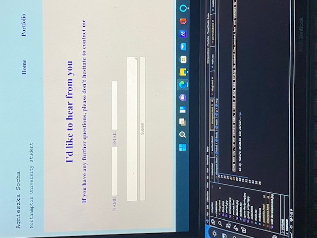
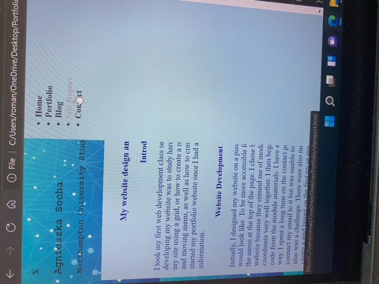
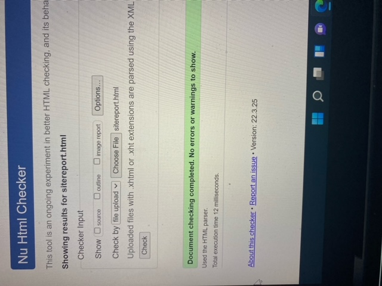
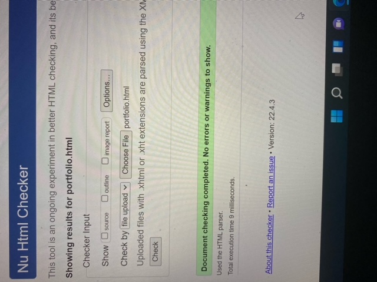
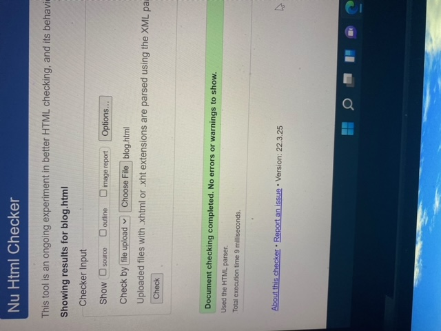
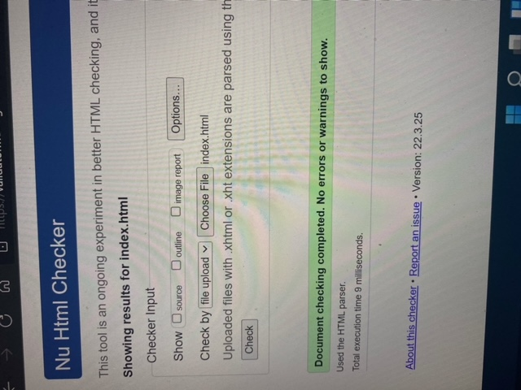
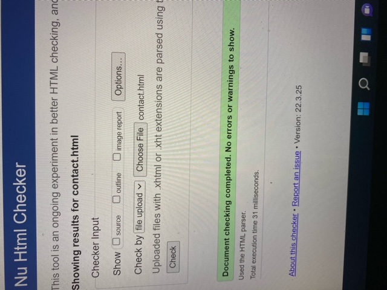
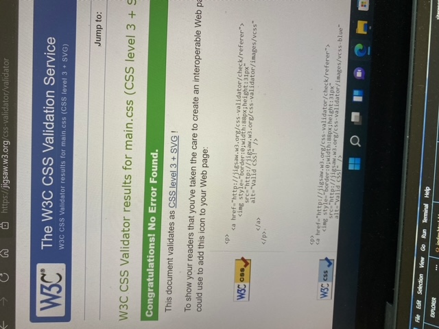
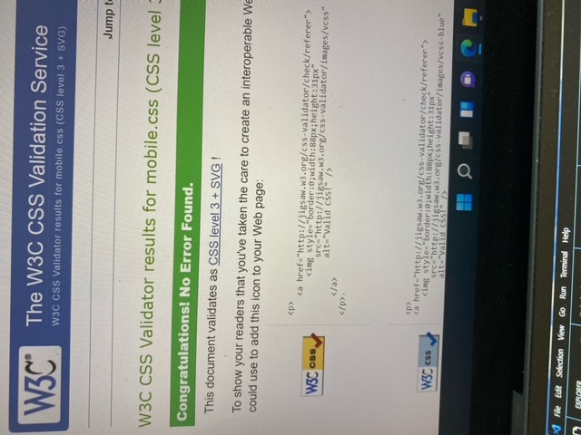
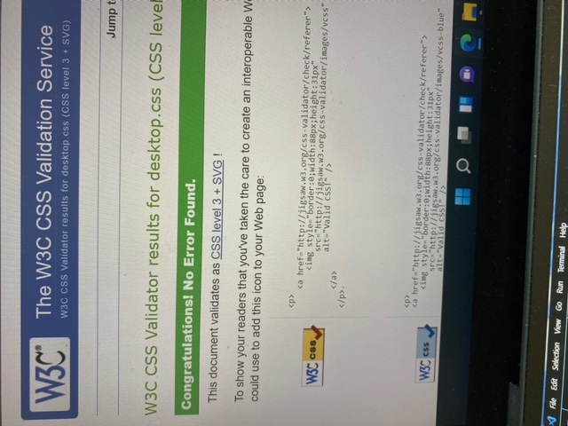

Website design and development report
Introduction
I took my first web development class seven weeks ago. My first step towards developing my website was to study hard until I learned how to create a layout of my site using a grid, or how to create a responsive website using hamburger icon and moving menu, as well as how to create a contact form. I started my portfolio website once I had all the necessary information.
Website Development Process and Code Validation
Initially, I designed my website on a piece of paper to see what it would look like. I have placed the menu at the top of the page to make it more accessible for users. For the majority of my website, I used blue colours, except for the blog site where I used additional yellow, green, and coral. Blues remind me of modern technology and computers, and they go well together. I then began developing my website using the code from the module materials except for the code for the fonts, which I got from www.fonts.google.com. During my development, I encountered many difficulties. I spent a long time on the contact page, trying to expand the contact box and connect my email to it but was unable to do so. Additionally, making my website responsive was a challenge, especially with the hamburger icon and hiding menu. At first, I was unable to see the menu on the mobile version of my website, all I could see was the x button, which did nothing when clicked. I spent three days trying to make it work. There were also many happy moments when I managed to create a grid layout on the first try or insert images and cut them to a suitable size.
When I finished designing my website, I checked all the HTML and CSS files for errors using the validator.w3.org website. As a result, I identified my errors and corrected them. I have included images of the checks at the bottom of my report.
Summary
As a whole, I am pleased with what I have accomplished after just seven weeks of studying web development with no prior knowledge. I am aware that my website is very basic, and I need more knowledge and practice in order to create a professional-looking website, but we all have to start somewhere. Through the development of this website, I learned many valuable skills that will help me in my future studies and career.
       